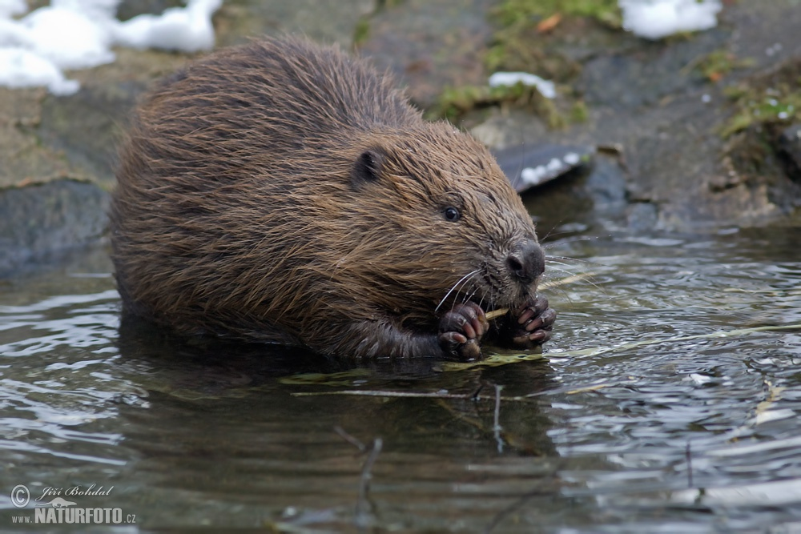

Bobr
Autor: Yaroslav C.
Mops

Autor: Yaroslav C.
barabulka
"Barabulka" to nazwa ryby (barbulka) oraz nazwa statku towarowego typu "General Cargo Ship". Ryba ta, znana również jako barbulka, to gatunek z rodziny barwenowatych, często spotykany w basenie Morza Śródziemnego. Statek "BARABULKA" został
Jeżyk
"Barabulka" to nazwa ryby (barbulka) oraz nazwa statku towarowego typu "General Cargo Ship". Ryba ta, znana również jako barbulka, to gatunek z rodziny barwenowatych, często spotykany w basenie Morza Śródziemnego. Statek "BARABULKA" został
wegewg
gfwegq3rhq3hq3hhq3hrrhherrhrha
hwre34q
iggggggqw3upgwiugg